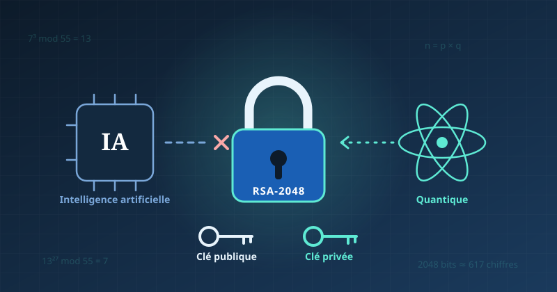

L'IA peut-elle casser un chiffrement RSA ? Ce que dit la science en 2026

Illustration : Ponts TI
Réponse courte : non. À ma connaissance, en octobre 2026, aucune publication sérieuse ne montre qu'une IA sait retrouver une clé privée RSA. La vraie menace pour RSA vient de l'informatique quantique, pas de l'IA. Et l'IA change surtout la donne ailleurs : hameçonnage, mots de passe faibles, failles de configuration.
Je me suis posé cette question récemment, et j'ai creusé. Je ne suis pas cryptographe. Ce qui suit est ce que j'en retiens, sources datées à l'appui. Quand une information est incertaine, je le dis.
- Comment fonctionnent la clé publique et la clé privée
- Comment RSA protège vos données, avec un petit exemple chiffré
- Ce que l'IA peut (et ne peut pas) faire contre RSA
- Pourquoi l'informatique quantique change le calendrier
- Ce que l'IA change vraiment pour les mots de passe et la sécurité
- Ce que cela signifie pour l'emploi en cybersécurité au Québec
🔑 Clé publique et clé privée : l'idée du cadenas
RSA est un système de chiffrement asymétrique : il utilise deux clés différentes, liées mathématiquement.
Imaginez un cadenas ouvert que vous distribuez à tout le monde.
- La clé publique, c'est ce cadenas ouvert. N'importe qui peut l'utiliser pour fermer une boîte contenant un message. Vous pouvez la publier sans risque.
- La clé privée, c'est la seule clé qui ouvre ce cadenas. Vous seul la possédez. Vous ne la partagez jamais.
Quelqu'un vous envoie un message ? Il le ferme avec votre cadenas public. Seule votre clé privée peut l'ouvrir. Même la personne qui l'a envoyé ne peut plus le relire.
Le système fonctionne aussi dans l'autre sens, pour la signature numérique. Vous « signez » un document avec votre clé privée. Tout le monde peut vérifier, avec votre clé publique, que la signature vient bien de vous.
C'est ce mécanisme qui sert, entre autres, quand votre navigateur affiche un cadenas sur un site en HTTPS (le protocole de navigation web sécurisé).
🧮 Comment RSA fonctionne vraiment
La sécurité de RSA repose sur une asymétrie simple : multiplier deux nombres premiers est facile, retrouver ces deux nombres à partir du résultat est extrêmement difficile. Retrouver ces nombres s'appelle la factorisation.
RSA a été publié en 1977 par Rivest, Shamir et Adleman (d'où son nom). Pour comprendre, prenons de tout petits nombres. Pas besoin d'être fort en maths : il suffit de savoir multiplier et diviser.
Une seule notion à connaître : le « reste »
Pensez à une horloge. Il est 10 h ; dans 5 heures, il sera 3 h, pas 15 h. L'horloge « fait le tour » à 12. Les mathématiciens écrivent : 15 modulo 12 = 3.
En pratique, « modulo » veut simplement dire : on divise et on garde le reste.
- 15 modulo 12 : 15 = 1 × 12 + 3, le reste est 3.
- 343 modulo 55 : 343 = 6 × 55 + 13, le reste est 13.
RSA, c'est une horloge géante. Au lieu de faire le tour à 12, elle fait le tour à un nombre énorme.
L'histoire : Alice veut envoyer un secret à Bob
Alice veut envoyer le nombre 7 à Bob. Personne d'autre ne doit pouvoir le lire.
Étape 1 — Bob fabrique ses clés, chez lui, en secret.
| Ce que fait Bob | Dans notre exemple | Public ou secret ? |
|---|---|---|
| Il choisit deux nombres premiers | 5 et 11 | Secret |
| Il les multiplie : c'est la taille de son « horloge » | 5 × 11 = 55 | Public |
| Il calcule un nombre caché : (5 − 1) × (11 − 1) | 4 × 10 = 40 | Secret |
| Il choisit un exposant public | 3 | Public |
| Il cherche le nombre d tel que 3 × d donne un reste de 1 quand on divise par 40 | d = 27, car 3 × 27 = 81 = 2 × 40 + 1 | Secret : c'est la clé privée |
Bob publie sa clé publique : (55, 3). Il garde 27 pour lui.
Étape 2 — Alice chiffre son message avec la clé publique.
Elle multiplie 7 par lui-même 3 fois (l'exposant public) : 7 × 7 × 7 = 343.
Puis elle prend le reste de la division par 55 : 343 = 6 × 55 + 13.
Elle envoie 13 à Bob. C'est le message chiffré.
Étape 3 — Bob déchiffre avec sa clé privée.
Il fait la même opération, mais avec 27 au lieu de 3 : il multiplie 13 par lui-même 27 fois, en gardant le reste de la division par 55. Le résultat est 7. Il retrouve le message d'Alice.
Ce n'est pas de la magie : les nombres 3 et 27 ont été choisis pour « s'annuler » l'un l'autre sur l'horloge de 55. Ce qu'on fait avec 3, on le défait avec 27.
Pour les curieux : comment Bob calcule 13 multiplié 27 fois par lui-même ?
On ne calcule jamais le nombre géant. On garde le reste à chaque étape :
13 × 13 = 169 → reste 4 · 4 × 4 = 16 → reste 16 · 16 × 16 = 256 → reste 36 · 36 × 36 = 1 296 → reste 31
Cela donne 13 puissance 2, 4, 8 et 16. Comme 27 = 16 + 8 + 2 + 1, on multiplie 31 × 36 × 4 × 13, toujours en gardant le reste. Résultat : 7.
Étape 4 — Que voit un espion ?
L'espion intercepte tout ce qui circule : 55, 3 et 13. Pour retrouver 7, il lui faut 27. Pour calculer 27, il lui faut 40. Et pour calculer 40, il lui faut 5 et 11.
Toute la sécurité tient donc à une question : peut-on retrouver 5 et 11 à partir de 55 ?
- Avec 55, un enfant y arrive en quelques secondes.
- Avec une vraie clé de 2048 bits, n est un nombre d'environ 617 chiffres. Aucun ordinateur classique connu ne sait retrouver ses deux facteurs dans un délai utile.
C'est tout le principe : chiffrer est facile pour tout le monde ; déchiffrer est facile seulement pour celui qui connaît le secret de fabrication.
Fait établi : le plus grand nombre de type RSA factorisé publiquement par des méthodes classiques est RSA-250 (250 chiffres), en 2020, au prix d'énormes ressources de calcul. On reste très loin des 617 chiffres de RSA-2048.
🤖 L'IA peut-elle casser RSA sans la clé privée ?
Aujourd'hui, rien ne l'indique. Casser RSA sans la clé privée revient à factoriser n. Or, je n'ai trouvé aucune publication montrant qu'un modèle d'IA y parvient pour des clés de taille réelle.
Des chercheurs ont bien essayé. Quelques exemples :
- Des réseaux de neurones ont été entraînés sur des semi-premiers (produits de deux nombres premiers) de 10 à 20 bits seulement (Université du Minnesota). C'est des milliards de fois plus petit que RSA-2048.
- Une prépublication de 2023 rapporte un classificateur qui « devine » une propriété des facteurs mieux que le hasard. L'auteur reconnaît lui-même qu'il est peu probable d'en tirer une méthode de factorisation pratique et à grande échelle (arXiv 2308.12290).
Pourquoi l'IA bute-t-elle sur ce problème ? Les modèles d'apprentissage automatique repèrent des régularités statistiques dans des données. Or, un bon chiffrement est conçu justement pour ne laisser aucune régularité exploitable. Il n'y a pas de « motif » à apprendre.
Les IA génératives comme ChatGPT ou Claude produisent du texte et du code. Elles peuvent expliquer RSA ou écrire un programme de factorisation classique. Mais elles ne résolvent pas le problème mathématique plus vite qu'un algorithme classique.
Ce que l'IA peut faire contre RSA… indirectement
RSA est rarement attaqué par les mathématiques. On l'attaque par ses mises en œuvre :
- clés générées avec un mauvais générateur aléatoire ;
- clés trop courtes (512 ou 1024 bits) encore en service ;
- clés privées laissées dans du code, un dépôt Git ou un serveur mal configuré ;
- attaques par canal auxiliaire : déduire la clé en mesurant le temps de calcul ou la consommation électrique d'un appareil.
C'est sur ce terrain que l'IA peut aider un attaquant : analyser plus vite du code, repérer des erreurs de configuration ou traiter des mesures de canaux auxiliaires. La clé n'est pas « cassée » : elle est contournée ou volée.
⚛️ La vraie menace : l'informatique quantique
Un ordinateur quantique suffisamment puissant pourrait casser RSA. Ce n'est pas une hypothèse, c'est un résultat mathématique connu depuis 1994. Cette année-là, Peter Shor a publié un algorithme qui factorise les grands nombres en un temps raisonnable sur une telle machine.
Un qubit est l'unité de calcul d'un ordinateur quantique. Les qubits « physiques » font des erreurs ; il en faut beaucoup pour obtenir un calcul fiable. La question est donc : combien de qubits faut-il pour casser RSA-2048 ?
Les estimations baissent vite, surtout grâce à de meilleurs algorithmes et à une meilleure correction d'erreurs :
| Date | Auteurs | Qubits physiques estimés | Durée du calcul | Statut |
|---|---|---|---|---|
| Mars 2026 | Cain et coll. (Oratomic, Caltech) | Environ 11 000 à 14 000 (atomes neutres) | Environ 97 jours | Prépublication |
| Février 2026 | Webster et coll. (Iceberg Quantum) | Moins de 100 000 | Environ un mois | Prépublication, révisée en mai 2026 |
| Mai 2025 | Gidney (Google Quantum AI) | Moins d'un million | Moins d'une semaine | Prépublication |
| 2019 | Gidney et Ekerå | Environ 20 millions | Environ 8 heures | Publié en 2021 (revue Quantum) |
Sources du tableau : articles cités, et la synthèse de Quantum Sentinel (octobre 2026).
Attention à bien lire ces chiffres. Ce sont des estimations théoriques, pas des attaques réalisées : aucune machine de cette taille n'existe. Les estimations de 2026 reposent sur des architectures différentes et des hypothèses fortes sur la qualité du matériel (Scott Aaronson, février 2026). À ma connaissance, elles n'ont pas encore été validées par les pairs.
Et en pratique ? Les démonstrations réelles de l'algorithme de Shor restent minuscules. Le plus grand nombre factorisé ainsi est 21 (3 × 7), et ces expériences utilisaient des versions simplifiées dites « compilées » (Skosana et Tame, Scientific Reports, 2021 ; Smolin et coll., 2013).
Entre 21 et un nombre de 617 chiffres, l'écart reste immense. Personne ne sait dire avec certitude quand il sera comblé. Ce qui est sûr : il se réduit plus vite qu'on ne le pensait en 2019.
🔐 L'IA et le craquage de mots de passe : ce qui change vraiment
L'IA ne « casse » pas un bon mot de passe. Elle devine mieux les mauvais. C'est une différence importante.
Un site sérieux ne stocke pas votre mot de passe en clair. Il stocke une empreinte (un hachage) : une transformation à sens unique. Quand une base de données fuit, l'attaquant essaie des millions de mots de passe candidats, calcule leur empreinte et compare. Le craquage, c'est donc surtout deviner dans le bon ordre.
C'est là qu'intervient l'IA. L'outil PassGAN, par exemple, apprend à partir de vraies fuites de mots de passe comment les humains les construisent (prénom + année + « ! », etc.). Il génère ensuite des candidats réalistes.
En 2023, une étude de l'entreprise Home Security Heroes a fait grand bruit : selon elle, PassGAN devinait 51 % des mots de passe courants en moins d'une minute (TechNewsWorld, 2023). Mais des spécialistes l'ont fortement nuancée. Selon eux, PassGAN n'allait pas plus vite que les outils classiques déjà utilisés par les attaquants (Tom's Guide, 2023). Ces chiffres datent de 2023 : à prendre avec prudence.
Ce que j'en retiens :
- Les mots de passe courts ou « humains » (prénoms, dates, mots du dictionnaire) sont vulnérables, avec ou sans IA.
- Les mots de passe longs et vraiment aléatoires ne donnent aucune prise à l'IA : il n'y a aucun motif humain à reconnaître.
- La réutilisation d'un même mot de passe sur plusieurs sites reste le vrai danger : une seule fuite ouvre toutes les portes.
Pistes concrètes
Utilisez un gestionnaire de mots de passe qui génère des mots de passe aléatoires et uniques. Activez l'authentification multifacteur (AMF) partout où c'est possible. Préférez une longue phrase de passe à un mot court et « complexe ». Passez aux clés d'accès (passkeys) quand un service les propose : elles reposent justement sur une paire clé publique / clé privée.
🛡️ IA et cybersécurité : les vrais enjeux
L'IA ne s'attaque pas au chiffrement. Elle s'attaque à l'humain et aux erreurs de configuration. C'est aussi la conclusion des autorités canadiennes.
Selon le Centre canadien pour la cybersécurité (Évaluation des cybermenaces nationales 2025-2026, octobre 2024), les technologies d'IA amplifient les menaces dans le cyberespace. Les cybercriminels s'en servent pour accroître leurs capacités. Le Centre souligne en particulier que l'IA générative rend le piratage psychologique (manipulation des personnes) plus personnalisé et plus convaincant (Centre pour la cybersécurité, 2025).
Concrètement, côté attaque :
- Hameçonnage plus crédible : des courriels sans fautes, dans un français ou un anglais naturel, adaptés à la cible.
- Hypertrucages (deepfakes) : imitation de la voix ou du visage d'un dirigeant pour obtenir un virement.
- Repérage plus rapide de failles connues ou de mauvaises configurations.
Mais l'IA sert aussi la défense :
- détection d'anomalies dans les journaux d'événements (logs) ;
- tri des alertes dans un centre des opérations de sécurité (SOC) ;
- analyse de code pour repérer des vulnérabilités avant les attaquants.
Le Centre rappelle que les bonnes pratiques de base restent efficaces : mises à jour régulières, authentification multifacteur et prudence face à l'hameçonnage (Centre pour la cybersécurité, janvier 2026).
⏳ Pourquoi agir dès maintenant
Le danger ne commence pas le jour où l'ordinateur quantique existera. Il a déjà commencé. C'est le risque « récolter maintenant, déchiffrer plus tard » (harvest now, decrypt later).
Un attaquant peut copier aujourd'hui des données chiffrées et attendre. Dans 10 ou 15 ans, s'il dispose d'une machine quantique capable, il les déchiffrera. Pour des données qui doivent rester secrètes longtemps (dossiers médicaux, secrets d'État, propriété intellectuelle), le risque est donc déjà réel.
La réponse s'appelle la cryptographie post-quantique (CPQ) : de nouveaux algorithmes conçus pour résister aux ordinateurs classiques et quantiques. Le NIST (l'organisme américain de normalisation) a publié ses trois premières normes en août 2024.
Au Canada, le Centre canadien pour la cybersécurité a publié en juin 2025 une feuille de route de migration vers la CPQ (ITSM.40.001) pour les systèmes non classifiés du gouvernement fédéral :
| Échéance | Jalon |
|---|---|
| Avril 2026 | Plans initiaux de migration remis par les ministères, puis rapports annuels |
| Fin 2031 | Migration des systèmes prioritaires terminée |
| Fin 2035 | Migration de tous les autres systèmes terminée |
Source : The Quantum Insider, juin 2025. Le Royaume-Uni et les États-Unis visent aussi 2035.
Ce calendrier vise le fédéral, mais il donne un signal clair aux banques, assureurs et entreprises : la migration prendra des années. Le Bureau du surintendant des institutions financières (BSIF) recommande d'ailleurs une migration progressive, fondée sur les risques (BSIF).
💼 Et pour l'emploi en cybersécurité au Québec ?
Les perspectives officielles sont bonnes, mais l'entrée dans le métier demande de la préparation. Je préfère vous dire les deux.
Ce que disent les sources publiques :
- Selon le Guichet-Emplois du gouvernement du Canada, les perspectives sont « bonnes » pour les spécialistes de la cybersécurité (CNP 21220) au Québec pour 2025-2027. La croissance de l'emploi devrait créer plusieurs postes.
- Selon Québec.ca, le salaire horaire médian est de 48,08 $ (moyenne 2022-2024), pour une fourchette de 30 $ à 71,43 $.
Ce que j'observe, et qui relève de la tendance plutôt que du fait établi :
- Beaucoup d'offres demandent déjà de l'expérience. Les postes vraiment juniors sont plus rares et plus disputés.
- L'IA automatise une partie des tâches de premier niveau (tri d'alertes, analyse simple). Les rôles qui demandent du jugement, de la communication et une bonne compréhension des systèmes résistent mieux.
- La migration post-quantique va créer des besoins pendant des années : inventorier où se trouve la cryptographie dans une organisation, prioriser, tester, migrer.
Compétences à développer si vous êtes en reconversion
- Les fondations : réseaux (TCP/IP, DNS), Linux, Windows et Active Directory. Sans elles, le reste ne tient pas.
- Un langage de script : Python ou PowerShell, pour automatiser et analyser.
- La gestion des identités et des accès (IAM) et l'infonuagique (cloud) : c'est là que beaucoup d'erreurs de configuration se produisent.
- Les bases de la cryptographie appliquée : certificats, TLS, gestion des clés. Comprendre ce qu'est l'agilité cryptographique (pouvoir changer d'algorithme facilement) devient un atout.
- Utiliser l'IA comme outil de travail, de façon critique : vérifier ses réponses, connaître ses limites, protéger les données qu'on lui confie.
- La communication : savoir expliquer un risque à un gestionnaire, en français et en anglais.
Si votre parcours vous a déjà fragilisé, sachez ceci : on n'entre pas en cybersécurité en un jour. Un projet personnel documenté (un laboratoire maison, un écrit sur ce que vous avez appris) vaut souvent plus qu'une longue liste de certifications.
📋 En résumé : fait, tendance, opinion
| Type | Affirmation |
|---|---|
| Fait établi | RSA repose sur la difficulté de factoriser de très grands nombres. |
| Fait établi | L'algorithme de Shor (1994) casserait RSA sur un ordinateur quantique assez puissant. |
| Fait établi | Les démonstrations réelles de Shor n'ont factorisé que de très petits nombres, comme 21. |
| Fait établi | Le Canada vise 2031 (systèmes prioritaires) et 2035 (tous les systèmes) pour la migration post-quantique du fédéral. |
| Tendance | Les estimations de qubits nécessaires baissent rapidement (de 20 millions en 2019 à moins de 100 000 dans des prépublications de 2026). |
| Tendance | L'IA rend l'hameçonnage et le piratage psychologique plus efficaces. |
| Incertain | La date à laquelle un ordinateur quantique pourra réellement casser RSA-2048. |
| Mon opinion | L'IA ne menace pas les mathématiques de RSA ; elle renforce surtout les attaques qui contournent le chiffrement. |
Si ce sujet vous intéresse pour votre carrière, commencez petit : sécurisez vos propres comptes (gestionnaire de mots de passe, AMF), puis montez un petit laboratoire pour comprendre les certificats et TLS. C'est concret, et cela se raconte en entrevue.
Sources
Consultées le 22 octobre 2026.
- Centre canadien pour la cybersécurité — Feuille de route pour la migration vers la cryptographie post-quantique (ITSM.40.001), juin 2025
- Centre canadien pour la cybersécurité — Évaluation des cybermenaces nationales 2025-2026, octobre 2024
- Centre canadien pour la cybersécurité — Cybermenaces contre le processus démocratique du Canada : mise à jour 2025
- Centre de la sécurité des télécommunications — Vue d'ensemble des menaces par rançongiciel 2025-2027, janvier 2026
- BSIF — Phases de préparation à la technologie quantique
- The Quantum Insider — Canada Sets Timeline to Shield Government Systems from Quantum Threat, juin 2025
- Gidney, C. — How to factor 2048 bit RSA integers with less than a million noisy qubits, arXiv, mai 2025
- Webster et coll. (Iceberg Quantum) — The Pinnacle Architecture, arXiv, février 2026
- Aaronson, S. — On reducing the cost of breaking RSA-2048 to 100,000 physical qubits, février 2026
- Quantum Sentinel — When Will Quantum Computers Break RSA?, octobre 2026
- Skosana, U. et Tame, M. — Demonstration of Shor's factoring algorithm for N = 21 on IBM quantum processors, Scientific Reports, 2021
- Smolin, J. et coll. — Pretending to factor large numbers on a quantum computer, arXiv, 2013
- Integer Factorisation, Fermat & Machine Learning on a Classical Computer, arXiv, 2023
- Université du Minnesota — ML-based Attack on Digitally Authenticated RSA Algorithm
- TechNewsWorld — étude Home Security Heroes sur PassGAN, 2023
- Tom's Guide — PassGAN AI can crack your passwords in seconds, 2023
- Guichet-Emplois — Perspectives d'emploi, analyste en cybersécurité au Québec
- Québec.ca — 21220 Spécialistes de la cybersécurité
Vous êtes en reconversion et la cybersécurité vous attire ?
Écrivez-moi. Je serai heureux d'échanger sur votre parcours. Je lis tous les messages.